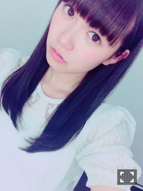

| 2016/04 15 Fri | ひめたん-0o0-その628 |
いく......ちゃん？
私の真似をしてくれてるらしいです
てことで始まりましたNOGIBINGO!6
なんと私、企画の中で、
アシスタントMCの座を
勝ち取ってしまいました！
わーい＼(^o^)／
初回からいろいろあったけど
結果オーライ＼(^o^)／嬉しい～
てことで次週からは
イジリーさんのお隣で
一緒に進行させていただいてます！
土日の握手会は
幕張メッセであります！
全国握手会ではまあやとペア！
広島レーンですね( ˇωˇ )
14レーンでお待ちしてます
まあやファンの皆さん、
ひめたんともよかったら
1日仲良くして下さいませ。
個別握手会は5部まで参加します( ˆωˆ )
わーい！前日はしっかり寝て
最後までお付き合い下さいませ。
こちらは17レーンです～
初めましての方も
お久しぶりの方も
会えるの楽しみにしてます♡

日曜の夜は、らじらー！サンデー
握手会が終わってから
みさ先輩と一緒に
幕張から渋谷へ直行します～
握手会が終わったらすぐ聞いてね！
声優アーツにはゲストに
水瀬いのりさんがきて下さいます( ˇωˇ )
募集しているメールテーマはこちら
◯みさ先輩へのメッセージ
◯セクシーに言いやがれ！round2
◯RAPでHappy Birthday
◯オリひめトークセッション
◯妄想PERFECT HUMAN
いやいやセクシーさで
みさ先輩に勝てませんって。笑
んでも頑張ります( ˆωˆ )/
レギュラーコーナーへの投稿や
リクエストソング、ふつおたも待ってます
おたよりの宛先はこちら
前回の日記に
たくさんのおめでとうコメント
ありがとうございました(´;ω;`)
日付が変わってから
地元や東京のお友だちから連絡が来たり
お仕事終わってから
現場でみんなにお祝いしてもらったりして
本当に幸せな一日でした～＊
この一年が一番充実してたなって
毎年思うので
今年はさらに塗り替えます！
これからもよろしくお願いします♡

これ約一年前(´,,•ω•,,｀)
～お知らせ～
4/15 EX大衆
4/22 BRODY
4/23 UTB
4/23 B.L.T.
4/26 ヤングチャンピオン
4/27 ラジオ番組表2016春号
4/30 月刊エンタメ
5/5 発掘！お宝ガレリア
5/8 BOMB
4/16 ハッピーインフォ(めんこいテレビ)
4/18 まるごと歌謡曲(RAB青森放送)
4/18 Posh!!(エフエム岩手)
B.L.T.さんはソログラビア！
去年みんなで登場して以来なのかな？
ソロでは初めましてかもしれません。
撮影がお誕生日近かったので
皆さんにお祝いしていただきました！
10代最後のグラビア撮影でした( ˆωˆ )
ヤングチャンピオンさん、
初の単独表紙です！何てことだ！
10代のうちにというか
今年中に叶ったらいいな～という
私の密かな願望だったのが
何と早々に叶ってしまいました(´;ω;`)
ズラッと書店やコンビニに並ぶのが
楽しみで楽しみで仕方ない！
平成28年熊本地震。
九州にお住いの皆様、大丈夫でしょうか。
コメントで近況を教えて下さる方もいて
リアルな声が届いています。
遠く離れているので
すぐにお力になることができない
もどかしさもありますが
東京から何かを発信することで
少しでも皆さんの心の支えになれたらな、と
私はそう考えています。
いつだろう、アンダーライブになるのかな、
熊本県や九州地方にも必ず伺うので
その時は皆さんに
笑顔を届けられますように。
(＊´・ω・＊)
コメント(681)
2016/04/15 23:55